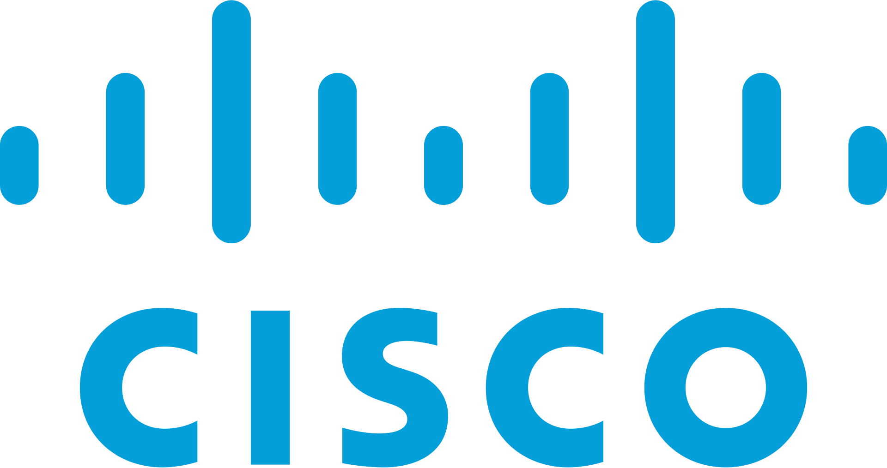
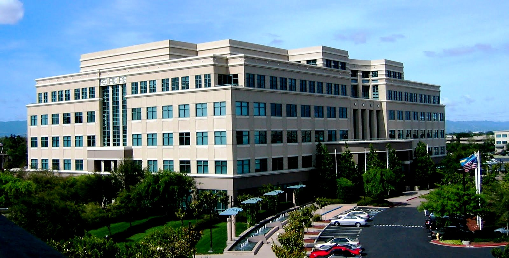

CISCO SYSTEMS
Cisco Systems, Inc. est une entreprise américaine fondée en 1984 et spécialisée dans les technologies de l'information et les réseaux. Le nom "Cisco se réfere au nom de sa ville fondatrice "san franCISCO", le logo représente le golden bridge Elle est mondialement reconnue pour ses solutions en matière de commutation (switching), de routage (routing), de cybersécurité, de collaboration (téléphonie IP, visioconférence), et plus récemment, pour ses services dans le cloud et l'intelligence artificielle. Cisco joue un rôle clé dans le développement de l'infrastructure Internet à l'échelle mondiale. Grâce à son innovation constante, elle s'adresse aussi bien aux grandes entreprises qu'aux administrations et PME, en leur offrant des solutions sécurisées et performantes.
Cisco Systems a son siège social à San Jose, dans l'État de Californie, aux États-Unis, au cœur de la Silicon Valley, l'un des principaux centres mondiaux de l'innovation technologique.
